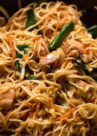
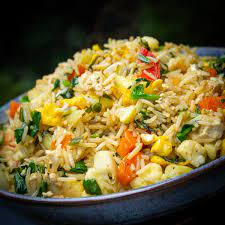
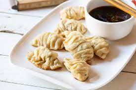
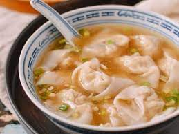

Chowmein
Chow mein is a Chinese dish of stir-fried noodles with vegetables and sometimes meat or tofu. It's a popular dish worldwide and can be customized with different sauces and ingredients.
Fried Rice
Fried rice is a dish of cooked rice that has been stir-fried in a wok or a frying pan, typically mixed with vegetables, eggs, and sometimes meat or seafood.
Dumplings
Dumplings are a type of food, usually found in Chinese, Korean, Japanese, and other East Asian cuisines. They are made by wrapping dough around fillings like meat, vegetables, or seafood.
Soup

Soup is a primarily liquid food, generally served warm or hot. Chinese soups often include a variety of ingredients like noodles, vegetables, and different meats or seafood.
Wonton
Wonton is a type of dumpling, originating from China, that is usually filled with meat and/or vegetables. They can be boiled, steamed, or fried and are commonly served in soup or with dipping sauces.